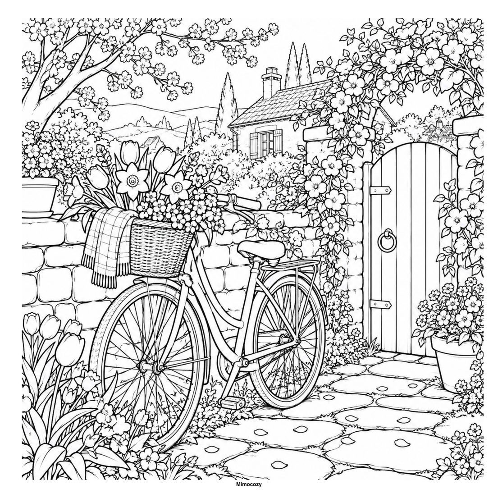
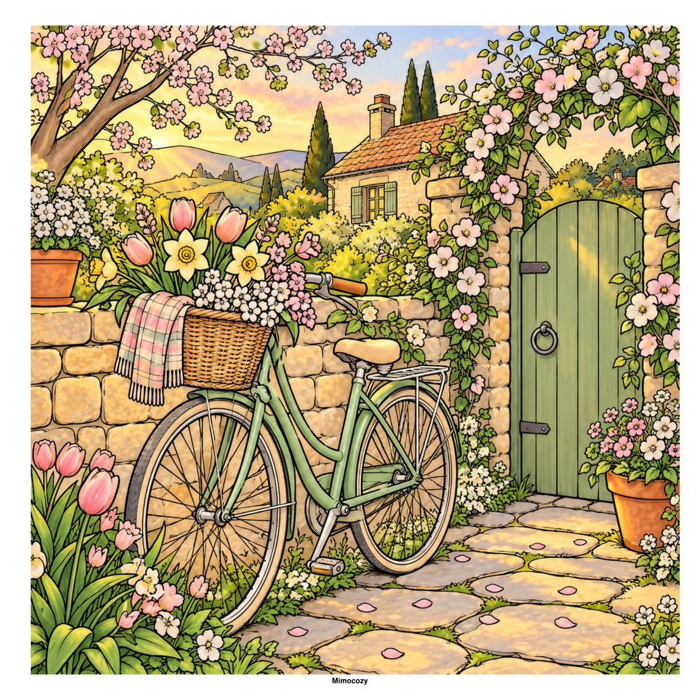
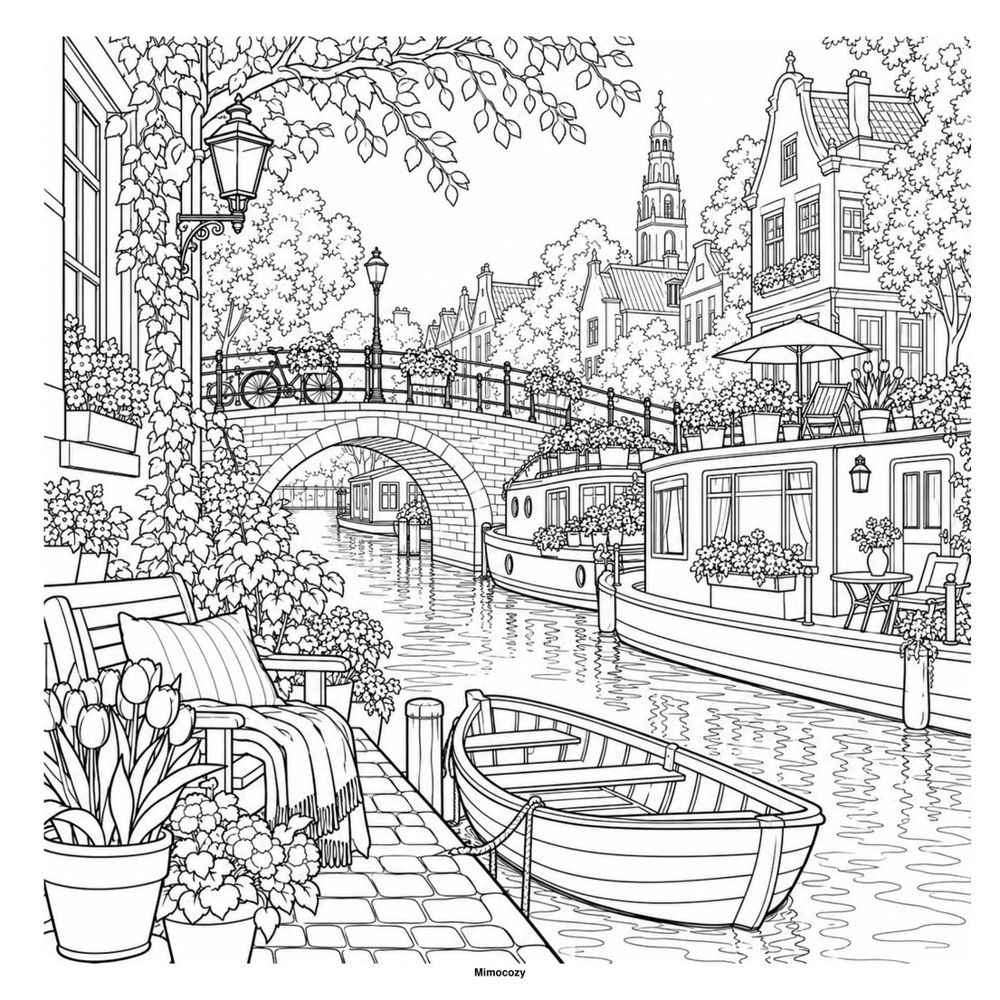
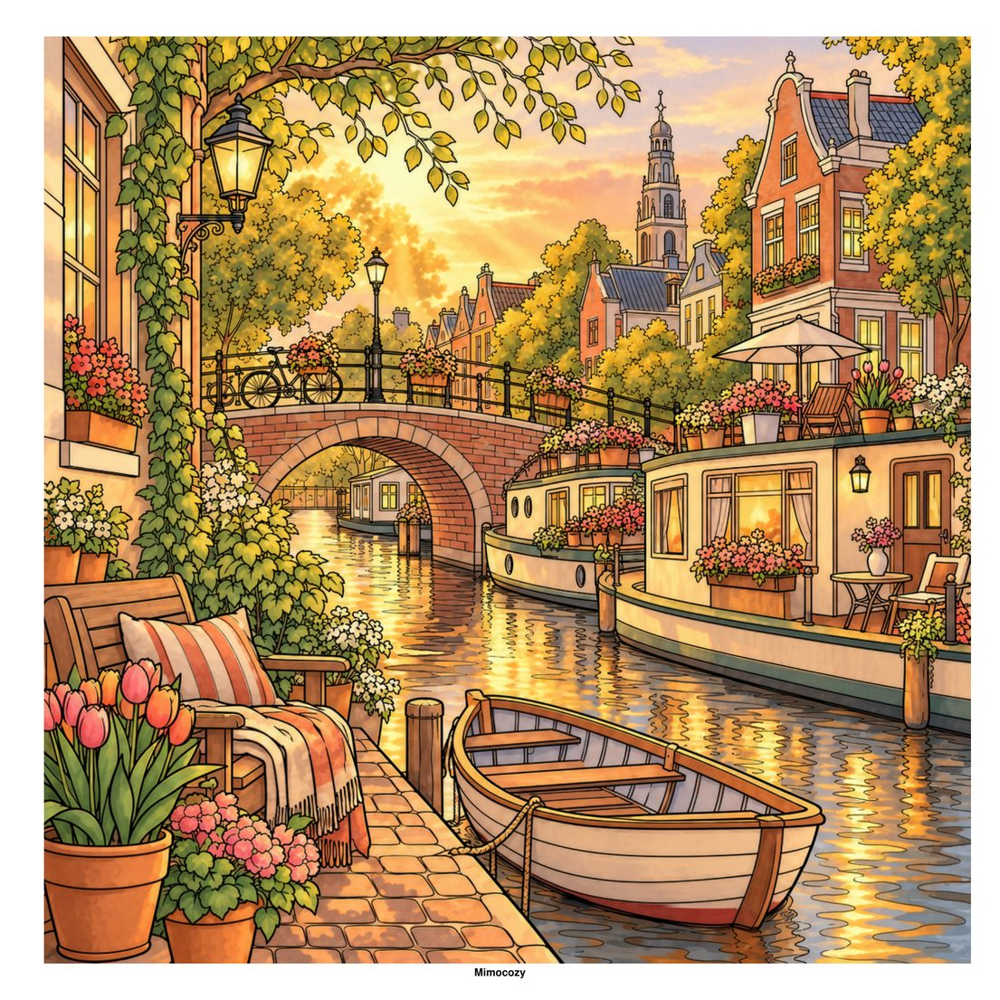

Jardins cheios de flores, lojas tranquilas da aldeia e quartos acolhedores de casa de campo. Vinte e cinco cenas para fazer de cada página uma pausa suave.
Toca numa imagem para a ver em grande. Usa as setas ou desliza para mudar.
Dá vida às tuas páginas
Exemplos de pintura: a mesma página do livro, antes e depois de colorida. O livro traz as páginas a preto e branco.

Página original

Exemplo de pintura

Página original

Exemplo de pintura
Descobre a história
Dias calmos e alegrias simples.
Slow Life: Cozy Spring Days
Uma nova estação de pequenas alegrias. Passeia por jardins floridos, lojas calmas da aldeia e quartos de casa de campo acolhedores, e deixa que cada página seja uma pausa suave, nas cores que combinam contigo. São vinte e cinco cenas únicas com verso em branco, uma página para testar as cores e dicas simples para colorir. Em breve.
Varandas ao sol, praias tranquilas, jardins tropicais e um gato na cadeira. Cinquenta cenas tropicais em traço detalhado, impressas só de um lado, para colorir sem pressa.
Uma roda-gigante que para lá no alto, um jantar com contrato e o segundo protagonista que sorri para a deixar partir. São 36 cenas originais em traço fino, inspiradas nos clichés de K-drama que qualquer fã reconhece.
Uma pasta atirada para a mesa da administração, uma gémea escondida no espelho do camarim e o beijo que o realizador cortou. São 36 cenas originais de K-drama em traço fino, do escritório à chuva que finalmente foi filmada.
Esta noite há festa na casa assombrada, mas a lanterna da lua desapareceu. Junta-te ao fantasma Milo, à gata Nova e à abóbora Pip e segue as pistas pela biblioteca, pela cozinha e pelo grande salão de baile.